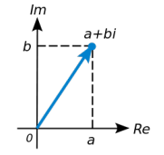

\(\bold{Kompleksarvuks}\) nimetatakse avaldist
\(z = a + b i\),
kus a ja b on reaalarvud ning i on imaginaarühik. Esimest liidetavat
nimetatakse kompleksarvu reaalosaks
(a = Re z) ja teist liidetavat b i
kompleksarvu imaginaarosaks, kus b on imaginaarosa kordaja (b = Im
z).

Kui kompleksarvu \(z = a + b i\) reaalosa on null, s.o kui a = 0, siis
kompleksarvu kujul \(z = b i\) nimetatakse puntimaginaararvuks.
Kõigi kompleksarvude hulka tähistatakse sümboliga \( C\).
Kompleksarvu i, mille korral kehtib \( i^2 \)
= −1, nimetatakse \(\bold{imaginaarühikuks}\)
Kompleksarvu z esitusviisi \(z = a + b i\), kus a, b ∈ R, nimetatakse kompleksarvu z \(\bold{algebraliseks}\) (ka Descartes’i) \(\bold{kujuks}\).
Kompleksarvu z = a + b i \(\bold{mooduliks}\) nimetatakse reaalarvu |z|, mis
on määratud võrdusega
|z| = \(\sqrt{a^2 + b^2}\)
Kompleksarvu \(z = a + b i\) \(\bold{kaaskompleksarvuks}\) (kaaskompleksiks)
nimetatakse kompleksarvu
\(\overline{z} = a - b i\)
Olgu antud kompleksarvud \(z_1 = a_1 + b_1 i\) ja \(z_2 = a_2 + b_2 i\). Siis nende
võrdumine, summa, vahe, korrutis ja jagatis defineeritakse järgnevalt:
1. \(z_1 = z_2 \) parajasti siis, kui \(a_1 = a_2 \)ja \(b_1 = b_2 \)
2. \(z_1 + z_2 \) = (\(a_1 ± a_2 \)) + (\(b_1 ± b_2 \))i
3. \(z_1 z_2 \)= (\(a_1 a_2 - b_1 b_2 \)) + (\(a_1 b_2 - b_2 b_1 \))i
4. \(\frac{z_1}{z_2}\) = \(\frac{z_1 \overline{z_2}}{|z_2|^2}\), kui \(z_2\) ̸= 0
Avaldist
z = r (cos φ + i sin φ)
nimetatakse kompleksarvu z \(\bold{trigonomeetriliseks}\) \(\bold{kujuks}\), kus reaalarv r on kompleksarvu z moodul |z|, reaalarv φ on kompleksarvu z
argument, mida tähistatakse φ = arg z.
Kaks trigonomeetrilisel kujul antud kompleksarvu
\(z_1 = r_1 (\cos{φ_1} + \sin{φ_1}) \) ja \(z_2 = r_2 (\cos{φ_2} + \sin{φ_2}) \)
on võrdsed parajasti siis, kui
1. nende moodulid on võrdsed (\( r_1 = r_2\)),
2. nende argumentide vahe on 2π kordne, s.t \(φ_1 − φ_2 = 2kπ\), k ∈ Z.
Olgu antud kaks kompleksarvu trigonomeetrilisel kujul
\(z_1 = r_1 (\cos{φ_1} + \sin{φ_1}) \) ja \(z_2 = r_2 (\cos{φ_2} + \sin{φ_2}) \)
Siis kahe kompleksarvu korrutamise ja jagamise kohta kehtivad järgmised reeglid:
1. korrutamisel moodulid korrutatakse ja argumendid liidetakse,
\(z_1 z_2= r_1 r_2 [\cos{(φ_1 + φ_2)} + i\sin{(φ_1 + φ_2)}] \) ,
2. jagamisel moodulid jagatakse ja argumendid lahutatakse,
\(\frac{z_1}{z_2} = \frac{r_1}{r_2} [\cos{(φ_1 + φ_2)} + i\sin{(φ_1 + φ_2)}] \), , kui \(r_2\) ̸= 0
Kompleksarvu täisarvulisel astendamisel kehtib \(\bold{de}\) \(\bold{Moivre’i}\) valem
\(z^k = r^k (\cos{k φ} + i\sin{k φ}) \), k ∈ Z, kus
kus \(z = r (\cos{φ} + i\sin{φ}) \) ja iga kompleksarvu z korral on defineeritud
\(z^0 = 1\)
Kompleksarvu z \(\bold{n-astme}\) \(\bold{juureks}\) nimetatakse iga kompleksarvu w,
mille korral \(w^n = z\)
Igal kompleksarvul r(cos φ + isin φ) ̸= 0 on n erinevat n-astme
juurt, mis avalduvad kujul
\(\sqrt[n]{r} = \cos(\frac{φ + 2kπ}{n}) + i\sin(\frac{φ + 2kπ}{n})\),
k = 0, 1, . . . , n − 1.
Trigonomeetrilisi funktsioone ja eksponentfunktsiooni seob \(\bold{Euleri}\) \(\bold{valem}\)
\(e^{iφ} = \cos{φ} + i\sin{φ}\),
kus φ on reaalarvuline muutuja ja e ≈ 2.71828 on naturaallogaritmi
alus.
Kompleksarvu z \(\bold{eksponentkujuks}\) nimetatakse esitust
\(z = r e^{iφ}\)
kus r on kompleksarvu z moodul ja φ argument.
Olgu antud kaks kompleksarvu eksponentkujul \(z_1 = r_1 e^{iφ_1}\) ja \(z_2 = r_2 e^{iφ_2}\). . Siis kehtivad järgmised võrdused:
1. \(z_1 z_2 = r_1 r_2 e^{i(φ_1 + φ_2)}\)
2. \(\frac{z_1}{z_2} = \frac{r_1}{r_2} e^{i(φ_1 + φ_2)}\), \(r_2\) ̸= 0,
3. \(z^n = r^n e^{i n φ}\) , n ∈ \(\Z\)
4. \(\sqrt[n]{z} = \sqrt[n]{r} e^{\frac{φ + 2kπ}{n}}\), k = 0, 1, . . . , n − 1.